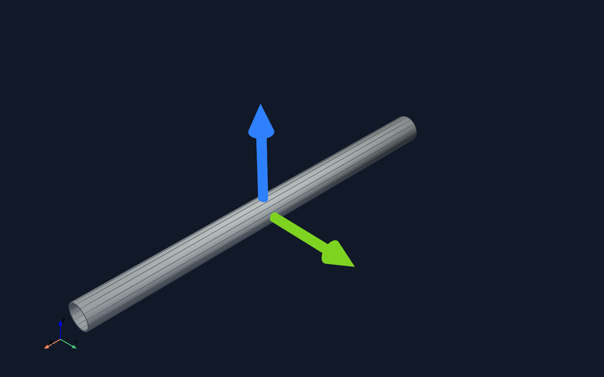
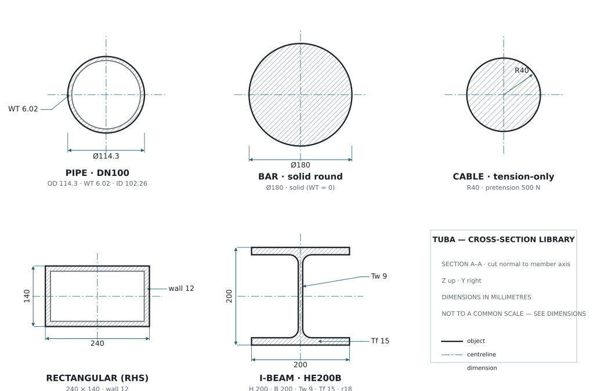
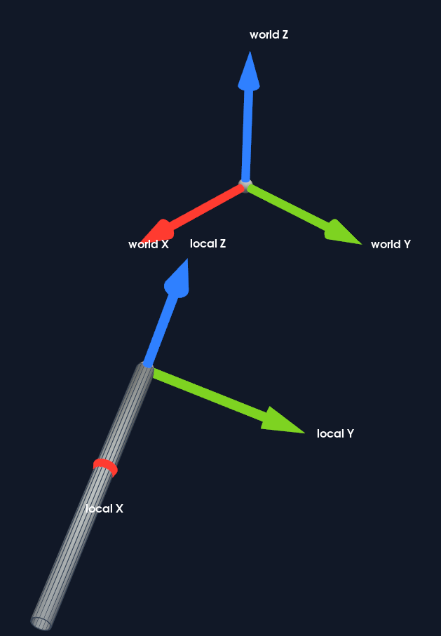
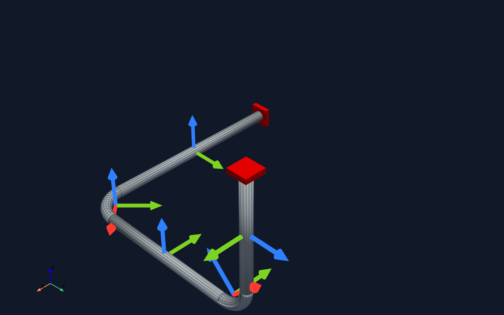
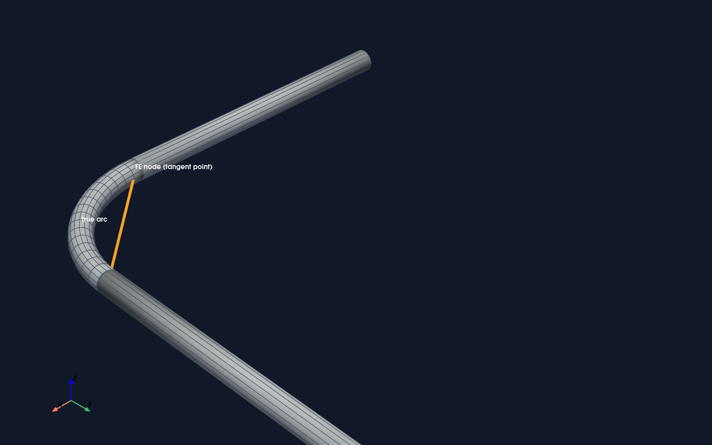
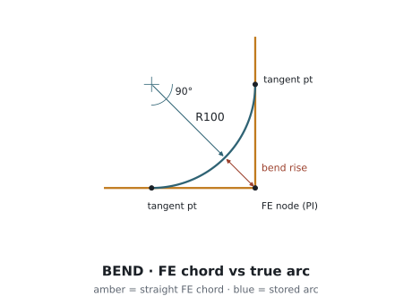
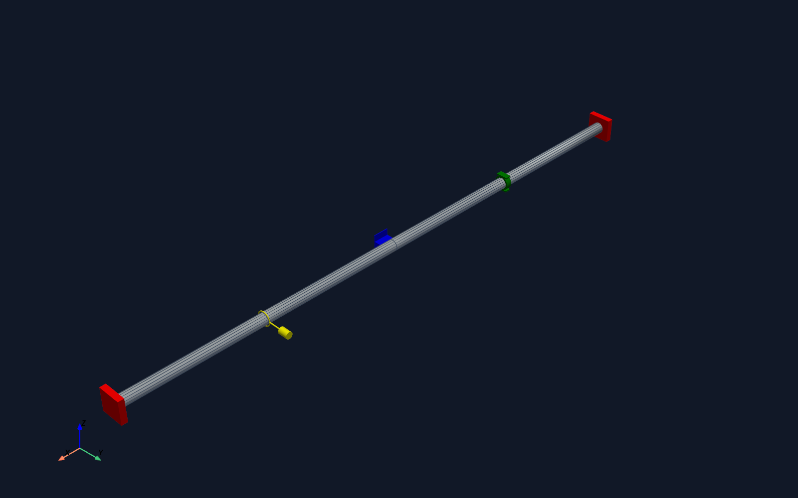

A Tuba model is not a free-form script. It is a typed engineering
graph: materials and cross-sections define what elements are, nodes
and elements define where they are, supports and operations define
boundary conditions and loads, and validation checks the graph before
a Code_Aster study is written.

A frame is three orthonormal vectors. Every element carries a local
triad: X (red) runs along the member axis, Z (blue) is up, Y (green) = Z × X.
Cross-sections

Cross-sections as dimensioned engineering details (SECTION A–A, cut normal
to the member axis; dimensions in mm). Left to right: pipe with bore and wall, solid bar,
tension cable, rectangular hollow, and an HE200B I-beam. Every dimension is read from the
live Tuba section object, so the drawing cannot drift from the model.
Cross-sections are named geometry definitions. Elements do not store
their own diameter or wall thickness; they reference a section name.
That is why a missing or invalid section blocks export before solver
files are trusted.
In a pipe section, OD is outside diameter and
WT is wall thickness. Both are entered in meters.
model.validate() requires a non-empty profile name. add_ibeam_section also resolves the profile through SectionCatalog.
Tuba uses SI units. Distances, diameters, wall thicknesses, bend radii,
and section heights are meters. Pressure is pascal, temperature is
Celsius, and material modulus values are pascal.
How sections reach Code_Aster
During study export, the writer groups elements by section and emits
Code_Aster cross-section data. Pipe and bar sections become circular
sections. Rectangular sections become rectangular beam data. I-beams
become general beam properties loaded from the catalog. Cable sections
emit area and initial pretension. Pipe bends additionally emit bend
geometry and a bend section entry.
Tuba record
Export intent
Why the user should care
PipeSection("DN100", OD, WT)
Pipe radius and wall thickness for pipe elements and bends.
Use this for rack/support members, not for pressure pipe.
IBeamSection("IPE200", "IPE200")
General beam properties from catalog data.
The catalog profile name is part of the engineering definition.
CableSection("Stay", radius, pretension)
Cable area and initial tension.
Pretension is not a cosmetic value; it changes the cable setup.
Local coordinate systems

A placement frame is a local coordinate system positioned in the world:
axis is local Z, ref_direction is projected to local X,
Y = Z × X. Points authored in local coordinates map to the world by
origin + basis · p.
Tuba keeps node coordinates in the model-global Cartesian system, but
it also supports local coordinate systems for reusable fragments,
imported IFC placement, and repeatable editing. Do not assume a node
is stored in local coordinates because it has placement metadata.
See it live
Drag to orbit. The global gizmo and each component's local axis triad are the
same vectors shown above, now interactive.
Three coordinate layers
Layer
What it means
Rules
Model-global coordinates
The actual coordinates stored on Node.coords.
Every node must be a finite 3-vector. Solver export is based on these coordinates.
Builder cursor
The pipe builder maintains a current point, forward direction, and up vector while it creates nodes and elements.
Default forward direction is global X. Default up vector is global Z. run advances in the current direction. Bend commands rotate the current direction.
Placement frames
A named local frame retained for fragments, IFC placement, GUI selection, and provenance.
axis is local Z. ref_direction is projected to local X. Local Y is computed from Z cross X. Parent frames compose.
from tuba import Model, PlacementFrame
model = Model("Frames")
model.add_placement_frame(
PlacementFrame(
id="rack_A",
origin=(10.0, 0.0, 0.0),
axis=(0.0, 0.0, 1.0),
ref_direction=(1.0, 0.0, 0.0),
)
)
point = model.to_global_point((0.5, 0.0, 0.0), frame="placement_frame:rack_A")
CoordinateSystem rejects zero axes, non-orthogonal axes,
and left-handed bases. PlacementFrame rejects an
axis and ref_direction that are colinear.
Pipe builder orientation

The pipe builder is a moving frame. run advances along the
current forward (local X); bend rotates it about a plane axis. Watch the
red axial arrow turn through the in-plane and the out-of-plane bend.

A bend stores the true circular arc, but the finite-element nodes sit at
the tangent-intersection point — a straight chord. The gap between the amber chord
and the blue arc is the bend rise.

The same idea as a dimensioned detail: FE elements meet at the
tangent-intersection point PI (amber chord); the stored
BendGeometry is the true arc (blue) of radius R, tangent to
each straight run at the tangent points. Their separation is the bend rise.
The pipe builder is a cursor DSL. It creates real nodes and elements
as it moves. The current direction behaves like the route's local X
direction for the next span. The up vector gives bend commands a
stable reference, and each bend stores explicit center, normal,
radius, angle, start tangent, and end tangent metadata.
Command
Geometry effect
Common mistake
start(point)
Sets the cursor point and creates or reuses the start node.
Forgetting a start point before route commands.
set_direction(vector)
Sets the next run direction.
Passing a zero vector or assuming it creates a new element by itself.
run(length)
Adds a straight pipe element from the current node to the advanced cursor point.
Using negative or unintended lengths instead of setting direction deliberately.
bend(radius, angle, plane)
Rotates the current direction and creates a pipe bend.
Using the wrong plane. XY bends around the up vector, while explicit normals are clearer in 3D routes.
bend_to(point, radius, plane_normal)
Creates a circular bend ending at an explicit target point.
Target too far for the requested radius or missing plane_normal for ambiguous geometry.

Supports are boundary conditions with real geometry: anchor, guide, rest,
and spring hanger, each aligned to the pipe's local frame.
Schemas and serialized models
model.to_dict() exports the model into a JSON-like
structure checked by MODEL_SCHEMA_V4. The schema checks
record shape: required blocks, allowed section types, required fields,
allowed operation quantities, and placement-frame structure. Semantic
validation then checks whether those records make engineering sense
together.
from tuba.schema import validate_model_dict
data = model.to_dict()
validate_model_dict(data)
round_tripped = Model.from_dict(data)
round_tripped.validate()
Check
Function
Example failure
Schema shape
validate_model_dict(data)
Missing sections, unsupported element type, missing required field.
Model semantics
model.validate()
Element references a missing node, pipe wall too thick, invalid operation field.
Solver runtime
solve_exported_study(...)
Code_Aster not installed, runtime preflight failed, study execution failed.
Result import
parse_result_artifacts(...)
Missing or empty displacement and internal-force rows block pipe result import. Optional reaction, stress, and RMED artifacts limit downstream review when absent.
How errors work
Tuba has four error boundaries. The earlier boundary should fail
before the later one is trusted. That keeps a bad model from becoming
a fake result display.
1. Authoring errors
Raised immediately by builder and helper methods, for example a
zero bend axis or an impossible bend_to target.
2. Schema errors
SchemaValidationError means serialized data does not
match MODEL_SCHEMA_V4.
3. Model validation errors
ModelValidationError collects semantic model errors
and raises them together so users can fix a batch.
4. Solver and artifact errors
Runtime failures remain Code_Aster setup, execution, or artifact
import failures. They must not be replaced with fabricated
stresses, reactions, or displacements.
from tuba.validation import ModelValidationError
try:
model.validate()
except ModelValidationError as exc:
print(str(exc))
Common validation failures
Message pattern
Meaning
Fix
Element ... references missing section
The element's section value is not in model.sections.
Create the section first or correct the section name.
Pipe section ... WT is too large for OD
The wall thickness would close or invert the pipe bore.
Use realistic OD and WT values in meters.
Element ... has identical start and end nodes
The element has zero length.
Fix node coordinates or the builder command that created the span.
Placement frame ... is invalid
The frame axes are not a valid right-handed local basis or the placement has colinear axis data.
Use finite, non-zero, orthogonal axes. For PlacementFrame, keep axis and ref_direction non-colinear.
Operation ... has unsupported quantity
The operation field quantity is not one of pressure, temperature, or wind.
Use a supported quantity or implement exporter support before documenting it as real.
linear temperature field requires route scope
Linear temperature fields are currently exported only by route and station range.
Provide route_id, station_start, and station_end.
wind field requires a finite non-zero direction vector
The wind load has no usable direction.
Set direction=(x, y, z). Current wind export is for beam-modeled elements only.
Support references missing node
A support points to a node id that does not exist.
Attach supports to the node returned by add_node or the builder.
Debugging order
Build or import the model data.
Run schema validation if the model came from JSON or a patch.
Run model.validate() and fix all listed semantic errors.
Export the Code_Aster study and inspect handoff files only as handoff files.
Run Code_Aster through the configured runtime.
Import the result artifacts before plotting, reviewing, or reporting stress, displacement, reaction, compliance, or operating-state results.